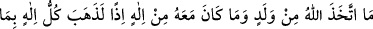
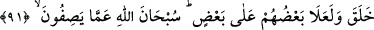
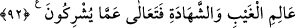

ALLAH EVLÂD
EDİNMEMİŞTİR
91. Allah evlâd edinmemiştir; O’nunla beraber hiçbir ilah da yoktur. Aksi
takdirde her ilah kendi yarattığını sevk ve idare eder ve mutlaka onlardan biri
diğerine galebe çalardı. Allah, onların (müşriklerin) yakıştırdıkları şeylerden
münezzehtir.
92. Allah, gaybı da şehâdeti de bilendir. O, müşriklerin ortak koştukları şeylerden
çok yüce ve münezzehtir.
Hrıstiyanların ve meleklerin Allah’ın kızları olduğunu kabul edenlerin dediği gibi
“Allah evlâd edinmemiştir;” Çünkü Allah hiçbir kimse ile hemcins ve benzer değildir
ki; kendi cinsi ve benzerinden eşi olsun da onunla çocuk meydana getirsin. “O’nunla
beraber” Putlara tapanların ve diğerlerinin dediği gibi ulûhiyyette O’na ortak olan
“hiçbir ilah da yoktur.” Bu âyet, nurun yaratıcısı ve zulmetin/karanlığın yaratıcısından
başkadır diyen kimse aleyhine bir delildir. “Aksi takdirde her ilâh kendi yarattığını
sevk ve idâre eder” O’nunla beraber başka ilâhlar olsaydı her ilâh diğer ilâhtan ayrı
olarak kendi yarattığı ile baş başa kalır, onu tekeline alır ve mülkünü başkalarının
mülkünden ayırırdı.
Her ilâh kendi yarattığına sâhip çıkar, bu ilâhın yarattıkları diğer ilahın
yarattıklarından ayrı ve bağımsız olurdu. Yaratılmışlardan hiçbiri arasında ise
birbirinden ayrı olma alâmeti görülmemektedir. Bu durumda Allah ile başka hiç bir ilâh
olmadığı sâbit oldu. O tektir, ortağı yoktur.
et-Te’vîlâtü’n-Necmiyye’de şöyle der: “Allah’ın ortak edinmesi gibi çocuk
edinmesinin de doğru olmadığına işâret etmektedir. Her ikisi de imkânsızdır. Çünkü
çocuk ve ortak, kadir ve samediyyette eşit olmayı gerekli kılar. Allah ise benzeri ve
cinsi olmaktan münezzehtir. Böyle olduğunu düşünecek olsak, her ilah kendi yarattığına
hükmeder ve her iş iki ilâha bağlı olurdu. Bu durumda nizam ve düzen ortadan
kalkardı.”
O’nun birliğine “lâ rayb” sayfası delildir
“Şehidallâhu” lâfzı ona şâhiddir
“Ve mutlaka” dünya krallarının arasında olduğu gibi “onlardan biri diğerine galebe